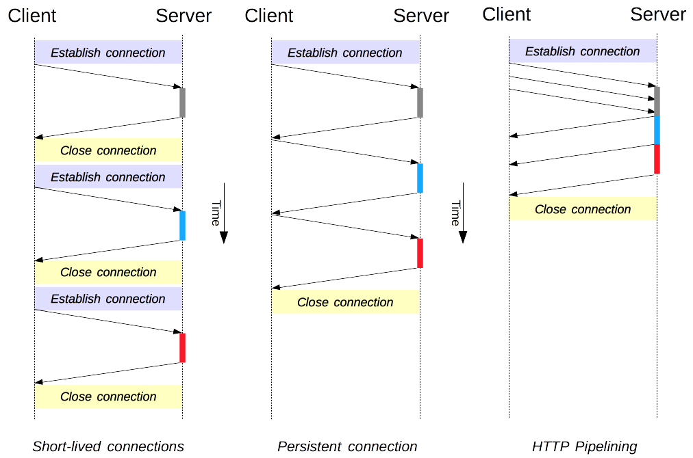
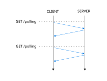
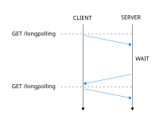
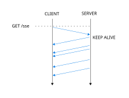
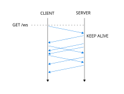

Web
Network Programming
JSON, Websocket
## <i class="fas fa-tasks"></i> Overview of Today's Class - JSON - Network Programming - Fetch - NodeJS client - Demo (polling, SSE, Websocket) - Strict mode
## <i class="fa-solid fa-graduation-cap"></i> Educational Objectives On completion of this part, students will be able to: - Read and write JSON data - Explain how a backend framework can be used to implement a chat application - Describe the differences between polling, long-polling, server-sent events, and Websockets - Implement a server that receives and sends messages - Explain the purpose of the `use strict` directive, the pros and cons of using it, and how it affects the behavior of JavaScript programs
Quiz
## <i class="fas fa-question-circle"></i> Question 1 Etant donné le formulaire suivant hébergé sur l'URL http://www.example.com/, quel est l'URL résultant d'un clique sur le bouton "Send"? ```html <form method="GET" action="send.html"> <input type="text" name="firstname" value="John" /> <input type="text" name="lastname" placeholder="Doe" /> <input type="submit" value="Send" /> </form> ``` - (A) `http://www.example.com/send.html` - (B) `http://www.example.com/send.html?firstname=John&lastname=` - (C) `http://www.example.com/submit.html` - (D) `http://www.example.com/submit.html?firstname=John&lastname=Doe` - (E) Aucune réponse correcte Notes: <div class="spoiler"> Answer (B): the `value` attribute of an input element is used as a default value when the form is submitted, while the `placeholder` attribute only provides text that will be shown in the input field when it is empty. </div>
## <i class="fas fa-question-circle"></i> Question 2 Quelle est la valeur de `result` ? ```js const words = ['hello', 'world', 'hi', 'javascript']; const result = words .filter(w => w.length > 3) .map(w => w.toUpperCase()); ``` - a) `['HELLO', 'WORLD', 'HI', 'JAVASCRIPT']` - b) `['HELLO', 'WORLD', 'JAVASCRIPT']` - c) `['hello', 'world', 'javascript']` - d) `['HELLO', 'WORLD', 'HI']` Notes: <div class="spoiler"> **Réponse : b)** `filter` garde les mots de longueur > 3 : `['hello', 'world', 'javascript']`. Ensuite `map` les transforme en majuscules : `['HELLO', 'WORLD', 'JAVASCRIPT']`. </div>
## <i class="fas fa-question-circle"></i> Question 3 Quelle est la valeur de `result` ? ```js const result = [].reduce((acc, n) => acc + n); ``` - a) `0` - b) `undefined` - c) `NaN` - d) Une `TypeError` est lancée Notes: <div class="spoiler"> **Réponse : d)** Appeler `reduce` sur un tableau vide **sans valeur initiale** lance une `TypeError` : *"Reduce of empty array with no initial value"*. C'est pourquoi il est recommandé de toujours fournir une valeur initiale. </div>
## <i class="fas fa-question-circle"></i> Question 4 Quelle est la valeur de `result` ? ```js const fruits = ['apple', 'banana', 'apple', 'cherry', 'banana', 'apple']; const result = fruits.reduce((acc, fruit) => { acc[fruit] = (acc[fruit] || 0) + 1; return acc; }, {}); ``` - a) `{ apple: 3, banana: 2, cherry: 1 }` - b) `{ apple: 1, banana: 1, cherry: 1 }` - c) `['apple', 'banana', 'cherry']` - d) `3` Notes: <div class="spoiler"> **Réponse : a)** `reduce` est utilisé ici pour compter les occurrences de chaque fruit. L'accumulateur initial est un objet vide `{}`. Pour chaque fruit, on incrémente sa valeur (ou on l'initialise à 1 si elle n'existe pas encore grâce à `|| 0`). </div>
## <i class="fas fa-question-circle"></i> Question 5 Quelle est la valeur de `result` ? ```js const data = [[1, 2], [3], [4, 5, 6]]; const result = data.flatMap(arr => arr.filter(n => n % 2 !== 0)); ``` - a) `[[1], [3], [5]]` - b) `[1, 3, 5]` - c) `[1, 2, 3, 4, 5, 6]` - d) `[[1], [3], [4, 5, 6]]` Notes: <div class="spoiler"> **Réponse : b)** `flatMap` applique la fonction de mapping (ici `arr => arr.filter(...)`) puis aplatit le résultat d'un niveau. Le map donne `[[1], [3], [5]]`, et le flat donne `[1, 3, 5]`. </div>
## <i class="fas fa-question-circle"></i> Question 6 Quelles sont les valeurs de `a` et `b` ? ```js const nums = [2, 4, 6, 8, 9]; const a = nums.every(n => n % 2 === 0); const b = nums.some(n => n % 2 === 0); ``` - a) `a = true`, `b = true` - b) `a = false`, `b = false` - c) `a = false`, `b = true` - d) `a = true`, `b = false` Notes: <div class="spoiler"> **Réponse : c)** `every` vérifie que **tous** les éléments sont pairs. Or `9` est impair, donc `every` retourne `false`. `some` vérifie qu'**au moins un** élément est pair, ce qui est le cas (par ex. `2`), donc `some` retourne `true`. </div>
## <i class="fas fa-question-circle"></i> Question 7 Quelle est la valeur de `result` ? ```js const letters = ['a', 'b', 'c', 'd']; const result = letters.reduce((acc, letter, i) => { return i === 0 ? letter : `${acc}-${letter}`; }); ``` - a) `'a-b-c-d'` - b) `'undefined-a-b-c-d'` - c) `'-a-b-c-d'` - d) Une erreur est lancée Notes: <div class="spoiler"> **Réponse : a)** Sans valeur initiale, `reduce` utilise le premier élément (`'a'`) comme accumulateur, et itère à partir du deuxième (index `1`). Comme `i` ne vaut jamais `0` dans les itérations suivantes, le résultat est `'a-b-c-d'`. (Le test `i === 0` ne sert à rien ici car il n'est jamais vrai.) Note : cela revient à `letters.join('-')`. </div>
## <i class="fas fa-question-circle"></i> Question 8 Quelle est la sortie du code suivant ? ```js const counter = { current: 1, next() { if (this.current <= 3) { return { value: this.current++, done: false }; } return { value: undefined, done: true }; } }; console.log(counter.next().value); console.log(counter.next().value); console.log(counter.next().done); ``` - a) `1`, `2`, `false` - b) `1`, `2`, `true` - c) `1`, `1`, `false` - d) `undefined`, `undefined`, `true` Notes: <div class="spoiler"> **Réponse : a)** Le premier appel retourne `{ value: 1, done: false }` (et `current` passe à 2). Le deuxième appel retourne `{ value: 2, done: false }` (et `current` passe à 3). Le troisième appel retourne `{ value: 3, done: false }` car `3 <= 3`, donc `done` vaut `false`. </div>
## <i class="fas fa-question-circle"></i> Question 9 Quel code faut-il ajouter à `myObj` pour que la boucle `for...of` affiche `1 2 3` ? ```js const myObj = { values: [1, 2, 3], // ??? }; for (const v of myObj) { console.log(v); } ``` - a) `next() { return this.values.pop(); }` - b) `[Symbol.iterator]() { return this.values[Symbol.iterator](); }` - c) `[Symbol.iterator]() { return this.values; }` - d) `iterator() { return this.values; }` Notes: <div class="spoiler"> **Réponse : b)** Pour qu'un objet soit itérable, il doit implémenter `[Symbol.iterator]()` qui retourne un **iterator**. Les tableaux sont déjà itérables : `this.values[Symbol.iterator]()` retourne l'itérateur du tableau. La réponse c) ne fonctionne pas car `this.values` est un tableau (iterable), pas un iterator — `for...of` appelle `[Symbol.iterator]()` sur l'objet retourné, ce qui fonctionnerait en fait... mais c'est indirect. Cependant, un Array est aussi un itérable et a sa propre méthode `[Symbol.iterator]`, donc c) marcherait aussi ! Mais b) est plus correct sémantiquement car on retourne directement l'itérateur. En fait, les deux réponses b) et c) fonctionnent car un tableau est à la fois un itérable et un itérateur (via `[Symbol.iterator]()`). Mais b) est la réponse la plus directe. </div>
## <i class="fas fa-question-circle"></i> Question 10 Quelle est la sortie du code suivant ? ```js function* gen() { yield 'a'; yield 'b'; return 'c'; } const result = [...gen()]; console.log(result); ``` - a) `['a', 'b', 'c']` - b) `['a', 'b']` - c) `['a', 'b', undefined]` - d) Une erreur est lancée Notes: <div class="spoiler"> **Réponse : b)** Le spread `...` itère le générateur via `for...of`, qui s'arrête quand `done: true`. Le `return 'c'` produit `{ value: 'c', done: true }`, mais comme `done` est `true`, la valeur `'c'` **n'est pas incluse** dans le résultat du spread. Seuls les `yield` sont collectés. </div>
## <i class="fas fa-question-circle"></i> Question 11 Quelle est la sortie du code suivant ? ```js function* greet() { console.log('Start'); yield 'Hello'; console.log('Middle'); yield 'World'; console.log('End'); } const g = greet(); console.log('Before'); console.log(g.next().value); ``` - a) `'Before'`, `'Start'`, `'Hello'` - b) `'Start'`, `'Before'`, `'Hello'` - c) `'Before'`, `'Start'`, `'Hello'`, `'Middle'` - d) `'Start'`, `'Hello'`, `'Before'` Notes: <div class="spoiler"> **Réponse : a)** Appeler `greet()` ne lance **pas** le corps de la fonction. Il crée simplement le générateur. Le corps n'est exécuté que lors du premier appel à `.next()`. Donc `'Before'` est affiché d'abord, puis `.next()` exécute le corps jusqu'au premier `yield`, affichant `'Start'`, et retournant `'Hello'`. </div>
## <i class="fas fa-question-circle"></i> Question 12 Quelle est la valeur de `result` ? ```js function* inner() { yield 3; yield 4; } function* outer() { yield 1; yield 2; yield* inner(); yield 5; } const result = [...outer()]; ``` - a) `[1, 2, 5]` - b) `[1, 2, [3, 4], 5]` - c) `[1, 2, 3, 4, 5]` - d) `[1, 2, inner, 5]` Notes: <div class="spoiler"> **Réponse : c)** `yield*` **délègue** l'itération au générateur `inner()`. Les valeurs de `inner()` (3 et 4) sont émises comme si elles faisaient partie de `outer()`. Le résultat est donc `[1, 2, 3, 4, 5]`. </div>
## <i class="fas fa-question-circle"></i> Question 13 Quelle est la valeur de `result` ? ```js function* letters() { yield* 'Hi'; yield '!'; } const result = [...letters()]; ``` - a) `['Hi', '!']` - b) `['H', 'i', '!']` - c) `['H', 'i!']` - d) Une erreur est lancée car `yield*` ne fonctionne pas avec des strings Notes: <div class="spoiler"> **Réponse : b)** `yield*` fonctionne avec **tout itérable**, et les strings sont itérables (caractère par caractère). Donc `yield* 'Hi'` émet `'H'` puis `'i'`. Ensuite `yield '!'` émet `'!'`. Le résultat est `['H', 'i', '!']`. </div>
## <i class="fas fa-question-circle"></i> Question 14 Quelles sont les valeurs de `a` et `b` ? ```js function* nums() { yield 1; yield 2; yield 3; } const gen = nums(); const a = [...gen]; const b = [...gen]; ``` - a) `a = [1, 2, 3]`, `b = [1, 2, 3]` - b) `a = [1, 2, 3]`, `b = []` - c) `a = []`, `b = [1, 2, 3]` - d) Une erreur est lancée Notes: <div class="spoiler"> **Réponse : b)** Un générateur ne peut être itéré **qu'une seule fois**. Après le premier spread, le générateur est épuisé (`done: true`). Le second spread ne produit aucune valeur, donc `b` est un tableau vide `[]`. Pour ré-itérer, il faudrait créer un nouveau générateur : `const gen2 = nums()`. </div>
## <i class="fas fa-question-circle"></i> Question 2 Quelle est la valeur retournée par la regex suivante? ```js console.log(/ab+c*d/.test("acd")); ``` - (A) `true` - (B) `false` - (C) `"acd"` - (D) `undefined` - (D) `null` - (F) Aucune réponse correcte Notes: <div class="spoiler"> Answer (A): the `*` quantifier matches zero or more occurrences of the preceding element, while the `+` quantifier matches one or more occurrences of the preceding element. `"acd"` does not contain any `b`, hence the result is false. Also, `test` returns a boolean describing whether a match is found or not, not the matched string. </div>
## <i class="fas fa-question-circle"></i> Question 3 Quelle est la valeur retournée par la regex suivante? ```js console.log(/[a-z]*/i.test("Hello")); ``` - (A) `true` - (B) `false` - (C) `"hello"` - (D) `undefined` - (E) `null` - (F) Aucune réponse correcte Notes: <div class="spoiler"> Answer (A) Although `[a-z]` expectl only lowercase characters, the `i` flag makes the regex case insensitive, so the capital `H` is matched, and the result is true. </div>
## <i class="fas fa-question-circle"></i> Question 4 Quelles sont les valeurs de groupe extraites avec la regex suivante? ```js console.log("ABC D E".matchAll(/([A-Z])/g)); ``` - (A) A - (B) ABC, D, E - (C) A, B, C, D, E - (D) A, B, C - (E) D, E - (F) Aucune réponse correcte Notes: <div class="spoiler"> Réponse (C). `[A-Z]` matche exactement une seule lettre majuscule. Le fait que ce pattern soit entouré par des parenthèses en fait un groupe, il y a donc un groupe par lettre majuscule. </div>
JavaScript Object Notation (JSON)
## <i class="fab fa-js"></i> JavaScript Object Notation (JSON) JSON is a standard for representing structured data **as a string**, inspired by the JS object syntax. Only objects, arrays, strings, numbers, booleans and null are supported. ```json { "firstname": "John", "lastname": "Doe", "age": 28, "interests": ["ski", "bike"] } ``` JSON is used for data serialization, usually for further transmission or storage. - File extension: `.json`, - MIME type: `application/json` https://developer.mozilla.org/en-US/docs/Learn/JavaScript/Objects/JSON
## <i class="fab fa-js"></i> JavaScript Object Notation (JSON) Note that JSON is a standard for how to format *strings*. Note also that it is different from Javascript Objects. The syntax of JSON is *inspired* from the syntax of Javascript objects, but it is not the same. Finally, note that JSON does not support representing functions, dates, or undefined.
## <i class="fab fa-js"></i> Object to JSON (stringify) The `JSON` global object offers conversion functions. `JSON.stringify` converts a Javascript object to a JSON string: ```js // A JavaScript Object var person = { firstname: "John", lastname: "Doe", age: 28, interests: ["ski", "bike"], get_age: function() { return this.age; } }; // And its JSON representation console.log(JSON.stringify(person)); // What will be the output ? ``` Note that functions and the prototype are **not** serialized. Stringifying an instance of a `Person` class will thus loose that information. <span class="detail">https://developer.mozilla.org/en-US/docs/Web/JavaScript/Reference/Global_Objects/JSON</span> Notes: <div class="spoiler"> {"firstname":"John","lastname":"Doe","age":28,"interests":["ski","bike"]} </div>
## <i class="fab fa-js"></i> JSON to Object (Parse) `JSON.parse` converts a JSON string to a Javascript object: ```js // A JSON object var person = '{"firstname":"John","lastname":"Doe","age":28,"interests":["ski","bike"]}'; // And its Javascript representation console.log(JSON.parse(person)); ``` <span class="detail">https://developer.mozilla.org/en-US/docs/Web/JavaScript/Reference/Global_Objects/JSON</span>
## <i class="fab fa-js"></i> JSON is NOT JavaScript! Why does the following snippet results in a SyntaxError? ```js // A JSON Object? var person = '{firstname:"John",lastname:"Doe",age:28,interests:["ski","bike"]}'; // Uncaught SyntaxError: Unexpected token f in JSON at position 1 console.log(JSON.parse(person)); ``` Could we do the following to "parse" data represented as JS syntax? ```js // DON'T DO THIS!!! var person = '{firstname:"John",lastname:"Doe",age:28,interests:["ski","bike"]}'; var expr = 'var person = ' + person + ';'; eval(expr); ``` Why is this a terrible idea? https://developer.mozilla.org/en-US/docs/Web/JavaScript/Reference/Global_Objects/JSON Notes: The main difference between the syntax of JS and JSON is that JSON requires double quotes around property names and string values, while JS objects do not. A more subtle difference is that JSON does not allow trailing commas, while JS objects do. In the second example, we are effectively using the Javascript execution engine to parse an object, instead of the JSON parser. The JS execution engine is Turing-complete, and can be made to execute anything, while the JSON parser is very limited, to only parse JSON.
## <i class="fab fa-js"></i> JSON is NOT JavaScript! The main differences between JS and JSON syntax are the following. - Property names : - JS: can be unquoted, or single/double quoted - JSON: must be double quoted - String values: - JS: can be single/double quoted - JSON: must be double quoted - Trailing commas: - JS: allowed - JSON: not allowed
## <i class="fab fa-js"></i> Differences example The following is a valid JavaScript object. ```js { firstname: 'John', lastname: "Doe", age: 28, interests: [`ski`, `bike`], // Trailing comma } ``` The following is a valid JSON string. ```json { "firstname": "John", "lastname": "Doe", "age": 28, "interests": ["ski", "bike"] } ``` *Note also that JSON cannot contain comments.*
Network Programming
## <i class="fab fa-js"></i> HTTP Recall that the Hypertext Transfer Protocol (HTTP) is a request/response protocol. **HTTP/1.0** had a **short-lived** connection model and allowed **persistent connection** with the `Connection: keep-alive` HTTP header. **HTTP/1.1**, the version of HTTP commonly used by Web browsers, introduced: - **Persistent connections** that allow to reuse a TCP connection to send and receive multiple requests and responses (modern browsers **enable** this by default); - **Pipelined connections** that allow to send multiple requests without waiting for the corresponding responses (modern browsers **do not enable** this by default); - **Chunked transfers** that allow to divide the data stream into a series of chunks that are received independently of each other; - **Protocol upgrades** that allow a client to ask the server for a change in the application protocol. https://www.ietf.org/rfc/rfc2616.txt
## <i class="fab fa-js"></i> HTTP Connection management <p></p> <span class="detail">https://en.wikipedia.org/wiki/HTTP_persistent_connection</span>
## <i class="fas fa-hand-paper"></i> Implementing a Chat Application You can clone the `example-chat` repository in the `HEIGVD-WEB-26` organization. https://github.com/HEIGVD-WEB-26/example-chat The following slides will be illustrated with these examples.
## <i class="fab fa-js"></i> Polling - The browser **polls** the events at a fixed interval - The server returns an empty result if there are no new events and immediately closes the connection - The function `setInterval` is typically used to periodically query the server - **Limitations:** - Delay due to interval being independent of the server. - Unnecessary requests when there are no new messages. <p></p>
## <i class="fab fa-js"></i> Polling - HTTP Request / Response **Sending a message** (POST): ```http POST /polling/alice/messages HTTP/1.1 Host: localhost:3000 Content-Type: application/x-www-form-urlencoded message=Hello+everyone! ``` ```http HTTP/1.1 200 OK Content-Type: application/json {"user":"alice","content":"Hello everyone!"} ``` ---- **Polling for new messages** (GET): ```http GET /polling/alice/messages HTTP/1.1 Host: localhost:3000 ``` ```http HTTP/1.1 200 OK Content-Type: application/json [{"user":"bob","content":"Hi Alice!"},{"user":"alice","content":"Hello everyone!"}] ``` If no new messages, the server responds with an empty array `[]`.
## <i class="fab fa-js"></i> Polling - Client & Server Code **Client** (browser) — polls every 10 seconds with `setInterval`: ```js // Send a message via POST message.onsubmit = event => { event.preventDefault(); let data = new URLSearchParams(new FormData(message)); fetch('messages', { method: 'POST', body: data }); } // Poll for new messages every 10 seconds async function polling() { let response = await fetch('messages'); let json = await response.json(); let html = json.map(m => `<p><b>${m.user}</b>: <i>${m.content}</i>`).join(""); messages.innerHTML = html + messages.innerHTML; } setInterval(polling, 10000); ``` **Server** (Express) — stores messages in per-user inboxes, returns and clears them on GET: ```js const inboxes = new Map(); router.post('/:user/messages', (req, res) => { const { user } = req.params; const message = { user, content: req.body.message }; if (!inboxes.has(user)) inboxes.set(user, []); for (let inbox of inboxes.values()) { inbox.push(message); } res.json(message); }); router.get('/:user/messages', (req, res) => { let user = req.params.user; if (!inboxes.has(user)) inboxes.set(user, []); let messages = inboxes.get(user); inboxes.set(user, []); res.json(messages.reverse()); }); ```
## <i class="fab fa-js"></i> Long-Polling - The browser **polls** events - The server keeps the connection open until an event occurs, then immediately sends it to the client. - When receiving an event, the client immediately closes the previous connection, and sends a new request. - **Limitations:** lots of requests if there are lots of events, since the connection is closed after each message. <p></p>
## <i class="fab fa-js"></i> Long-Polling - HTTP Request / Response **Sending a message** (POST) — same as polling: ```http POST /longpolling/alice/messages HTTP/1.1 Host: localhost:3000 Content-Type: application/x-www-form-urlencoded message=Hello+everyone! ``` ```http HTTP/1.1 200 OK Content-Type: application/json {"user":"alice","content":"Hello everyone!"} ``` ---- **Waiting for a new message** (GET) — the server **holds the connection open** until a message arrives: ```http GET /longpolling/bob/messages HTTP/1.1 Host: localhost:3000 ``` *...server keeps the connection open, waiting...* ```http HTTP/1.1 200 OK Content-Type: application/json {"user":"alice","content":"Hello everyone!"} ``` The client immediately sends a **new GET request** after receiving a response.
## <i class="fab fa-js"></i> Long-Polling - Client & Server Code **Client** (browser) — recursive `async` function, re-sends GET as soon as a response arrives: ```js // Send a message via POST message.onsubmit = event => { event.preventDefault(); let data = new URLSearchParams(new FormData(message)); fetch('messages', { method: 'POST', body: data }); } // Recursive long-polling: re-send GET as soon as response arrives async function longpolling() { let response = await fetch('messages'); let message = await response.json(); let html = `<p><b>${message.user}</b>: <i>${message.content}</i>`; messages.innerHTML = html + messages.innerHTML; await longpolling(); // immediately re-open connection } longpolling(); ``` **Server** (Express + EventEmitter) — holds the response until an event is emitted: ```js const chat = new EventEmitter(); router.post('/:user/messages', (req, res) => { const message = { user: req.params.user, content: req.body.message }; chat.emit('message', message); // notify all waiting clients res.json(message); }); router.get('/:user/messages', (req, res) => { // Don't call res.json() — register a callback that will do it on the next event const listener = (message) => res.json(message); chat.on('message', listener); res.on('close', () => chat.removeListener('message', listener)); }); ```
## <i class="fab fa-js"></i> Server-Sent Events (SSE) - The browser opens a connection and **listens** to events from the server - The server returns events as they become available and keeps the connection open - The browser provides the **EventSource API** that manages reconnections - **Limitations:** unidirectional communication, from server to client. Client cannot send events back to server. <p></p> https://developer.mozilla.org/en-US/docs/Web/API/Server-sent_events/Using_server-sent_events
## <i class="fab fa-js"></i> SSE - HTTP Request / Response **Sending a message** (POST) — same as polling: ```http POST /sse/alice/messages HTTP/1.1 Host: localhost:3000 Content-Type: application/x-www-form-urlencoded message=Hello+everyone! ``` ```http HTTP/1.1 200 OK Content-Type: application/json {"user":"alice","content":"Hello everyone!"} ``` ---- **Subscribing to the event stream** (GET): ```http GET /sse/bob/messages HTTP/1.1 Host: localhost:3000 Accept: text/event-stream ``` ```http HTTP/1.1 200 OK Content-Type: text/event-stream Transfer-Encoding: chunked Connection: keep-alive event: message data: {"user":"alice","content":"Hello everyone!"} event: message data: {"user":"bob","content":"Hi Alice!"} ``` The connection **stays open** and the server pushes new events as they arrive.
## <i class="fab fa-js"></i> SSE - Event Stream Format The SSE protocol defines a simple **text-based** format. Each event is composed of fields, one per line, followed by a **blank line** to separate events. Available fields: - **`event:`** — the event type (e.g., "message", "notification", etc.) - **`data:`** — the event payload (can span multiple lines with repeated `data:` fields). The end of the event is signaled by a blank line. - **`id:`** — an optional event ID (used for reconnection: the browser sends `Last-Event-ID` header) - **`retry:`** — reconnection delay in milliseconds Example stream from the chat application: ``` event: message data: {"user":"alice","content":"Hello everyone!"} event: message data: {"user":"bob","content":"Hi Alice!"} ``` In the server code, each event is written as a string: ```js // event name, followed by data JSON payload and a blank line = end of event res.write(`event: message\ndata: ${JSON.stringify(message)}\n\n`); ``` The browser's `EventSource` API automatically parses this format and fires corresponding events.
## <i class="fab fa-js"></i> SSE - Client & Server Code **Client** (browser) — uses the `EventSource` API to subscribe to the stream: ```js // Send a message via POST message.onsubmit = event => { event.preventDefault(); let data = new URLSearchParams(new FormData(message)); fetch('messages', { method: 'POST', body: data }); } // Subscribe to the event stream let eventSource = new EventSource('messages'); eventSource.addEventListener('message', event => { let message = JSON.parse(event.data); let html = `<p><b>${message.user}</b>: <i>${message.content}</i>`; messages.innerHTML = html + messages.innerHTML; }); ``` **Server** (Express) — sets SSE headers and writes events as they occur: ```js const chat = new EventEmitter(); router.post('/:user/messages', (req, res) => { const message = { user: req.params.user, content: req.body.message }; chat.emit('message', message); res.json(message); }); router.get('/:user/messages', (req, res) => { res.status(200); res.set('Content-Type', 'text/event-stream'); res.set('Transfer-Encoding', 'chunked'); const listener = (message) => res.write(`event: message\ndata: ${JSON.stringify(message)}\n\n`); chat.on('message', listener); res.on('close', () => chat.removeListener('message', listener)); }); ```
## <i class="fab fa-js"></i> Websocket - The browser opens a connection and `Upgrade`s the protocol to websocket - Once the websocket connection is open the browser and the server are allowed to send events (bi-directional stream) - The browser provides the **WebSocket API** that manages protocol upgrade - **Limitation:** this method requires a protocol upgrade <p></p>
## <i class="fab fa-js"></i> Websocket https://developer.mozilla.org/en-US/docs/Web/API/WebSocket#Examples Note that WebSocket does not use HTTP : it is a distinct protocol, living *alongside* HTTP. This is why the URL of a websocket connection starts with `ws://` instead of `http://`. Similarly to HTTPS for HTTP, there is a secure equivalent of websocket: WSS, whose url starts with `wss://`.
## <i class="fab fa-js"></i> Websocket - HTTP Upgrade The WebSocket connection starts with an HTTP **Upgrade** request: ```http GET /websocket/alice/messages HTTP/1.1 Host: localhost:3000 Upgrade: websocket Connection: Upgrade ... ``` The server accepts the upgrade with a **101 Switching Protocols** response: ```http HTTP/1.1 101 Switching Protocols Upgrade: websocket Connection: Upgrade ... ``` After this handshake, the connection is **no longer HTTP**. Both sides can now send and receive **WebSocket frames** (binary or text) at any time over the same TCP connection. Messages are exchanged as **frames**, not as HTTP request/responses: ``` Client -> Server (text frame): Hello everyone! Server -> Client (text frame): {"user":"alice","content":"Hello everyone!"} ```
## <i class="fab fa-js"></i> Websocket - Client & Server Code **Client** (browser) — uses the `WebSocket` API for bidirectional communication: ```js const socket = new WebSocket('ws://localhost:3000/websocket/alice/messages'); socket.onopen = function (e) { // Send a message through the websocket message.onsubmit = event => { event.preventDefault(); socket.send(content.value); } // Receive messages from the websocket socket.onmessage = function (message) { let data = JSON.parse(message.data); let html = `<p><b>${data.user}</b>: <i>${data.content}</i>`; messages.innerHTML = html + messages.innerHTML; }; }; ``` **Server** (Express + express-ws) — handles WebSocket connections directly: ```js const chat = new EventEmitter(); expressWs(router); router.ws('/:user/messages', (ws, req) => { const { user } = req.params; // Receive a message from a client ws.on('message', (content) => { chat.emit('message', { user, content }); }); // Broadcast messages to all connected clients const listener = (message) => ws.send(JSON.stringify(message)); chat.on('message', listener); ws.on('close', () => chat.removeListener('message', listener)); }); ``` Note: the server uses `express-ws`, a library that adds `.ws()` route support to Express. No POST route is needed — messages are sent and received directly through the WebSocket.
Strict mode
## <i class="fab fa-js"></i> History JS was initially meant to be easy to pick up, so they chose to give non-error semantics to scenarios that should otherwise be errors. Strict mode treats these mistakes as errors so that they're discovered and promptly fixed. Strict mode changes both syntax and runtime behavior. In summary: - More developer mistakes throw errors - Simplifications to how variable references are resolved - Simplifications of `eval` and `arguments` - "Secure" JS is easier to write - Anticipations for future ECMAScript versions *[More details on changes in strict mode](https://developer.mozilla.org/en-US/docs/Web/JavaScript/Reference/Strict_mode#changes_in_strict_mode)*
## <i class="fab fa-js"></i> Clearer errors In strict mode, the following will result in errors: - Assigning to undeclared variables (instead of creating a global one) - Failing to assign to an object's property (e.g. non-writable) - `delete`ing properties that are not deletable (e.g. non-configurable) - Duplicate function parameters or property names - Number literals starting with `0`. Octal literals now start with `0o`. - Trying to set a property on primitive values. *[More details on errors in strict mode](https://developer.mozilla.org/en-US/docs/Web/JavaScript/Reference/Strict_mode#converting_mistakes_into_errors)* Notes: In normal (a.k.a. "sloppy") mode, the last duplicated argument of a function hides previous identically-named arguments. Those previous arguments remain available through the [arguments](https://developer.mozilla.org/en-US/docs/Web/JavaScript/Reference/Functions/arguments) local variable. In sloppy mode, a number beginning with `0` is interpreted as an octal number if all its digits are smaller than `8`, e.g. `0644 === 420` ! In strict mode this results in a syntax error.
## <i class="fab fa-js"></i> Object property descriptors Every property on an object has a **property descriptor** that defines its behavior. It can be queried with the `Object.getOwnPropertyDescriptor` function: ```js const person = { name: "Alice", age: 30 }; console.log(Object.getOwnPropertyDescriptor(person, "name")); // { value: "Alice", writable: true, enumerable: true, configurable: true } ``` - **`writable`**: can the value be changed? - **`enumerable`**: does it show up in `for...in` loops? - **`configurable`**: can the descriptor be changed, and can the property be deleted? We can define or modify descriptors with `Object.defineProperty`: ```js Object.defineProperty(person, "name", { writable: false }); console.log(Object.getOwnPropertyDescriptor(person, "name")); // { value: "Alice", writable: false, enumerable: true, configurable: true } ``` <span class="detail">https://developer.mozilla.org/en-US/docs/Web/JavaScript/Reference/Global_Objects/Object/getOwnPropertyDescriptor</span>
## <i class="fab fa-js"></i> Assigning to undeclared variables In sloppy mode, assigning to a variable that has not been declared with `var`, `let`, or `const` silently creates a **global variable**. In strict mode, this throws a `ReferenceError`. <span class="detail">Sloppy mode:</span> ```js function setName() { username = "Marie"; // silently creates a global variable! } setName(); console.log(username); // "Marie" ``` <span class="detail">Strict mode:</span> ```js "use strict"; function setName() { username = "Marie"; } setName(); // ReferenceError: username is not defined ```
## <i class="fab fa-js"></i> Failing to assign to a non-writable property Some properties are **non-writable**. In sloppy mode, assigning to them **silently fails**. In strict mode, it throws a `TypeError`. ```js "use strict"; const obj = {}; Object.defineProperty(obj, "x", { value: 42, writable: false }); console.log(Object.getOwnPropertyDescriptor(obj, "x")); // { value: 42, writable: false, enumerable: false, configurable: false } obj.x = 99; // TypeError: "x" is read-only ``` This also applies to **built-in** non-writable properties: ```js "use strict"; console.log(Object.getOwnPropertyDescriptor(Math, "PI")); // { value: 3.141592653589793, writable: false, enumerable: false, configurable: false } Math.PI = 3; // TypeError: "PI" is read-only ``` In sloppy mode, both assignments above would **silently do nothing**.
## <i class="fab fa-js"></i> Deleting non-configurable properties Some properties are **non-configurable**, meaning they cannot be deleted or have their descriptor changed. In sloppy mode, attempting to `delete` them **silently fails** (returns `false`). In strict mode, it throws a `TypeError`. ```js "use strict"; console.log(Object.getOwnPropertyDescriptor(Object.prototype, "toString")); // { ..., configurable: true } this one IS configurable console.log(Object.getOwnPropertyDescriptor(Math, "PI")); // { ..., configurable: false } this one is NOT delete Math.PI; // TypeError: property "PI" is non-configurable and can't be deleted ``` Same with our own non-configurable properties: ```js "use strict"; const obj = {}; Object.defineProperty(obj, "id", { value: 1, configurable: false }); delete obj.id; // TypeError: property "id" is non-configurable and can't be deleted ```
## <i class="fab fa-js"></i> Duplicate function parameters In sloppy mode, if a function has two parameters with the **same name**, the last one **silently** shadows the first. <span class="detail">Sloppy mode:</span> ```js function add(a, a, c) { return a + a + c; // the first `a` is inaccessible! } console.log(add(1, 2, 3)); // 7 (2 + 2 + 3), not 6 (1 + 2 + 3) ``` In strict mode, this is a **SyntaxError**. <span class="detail">Strict mode:</span> ```js "use strict"; function add(a, a, c) { // SyntaxError: duplicate formal argument a return a + a + c; } ``` Notes: In sloppy mode, the previous arguments are still available via the `arguments` object: `arguments[0]` would be `1` in the example above.
## <i class="fab fa-js"></i> Octal literals starting with 0 In sloppy mode, a number prefixed with `0` is interpreted as **octal** (base 8) if all digits are valid octal digits (`<8`). This is confusing and error-prone. In strict mode, this legacy syntax is a **SyntaxError**. <span class="detail">Sloppy mode:</span> ```js console.log(0644); // 420 (octal interpretation: 6×64 + 4×8 + 4) console.log(0644 === 420); // true ``` <span class="detail">Strict mode:</span> ```js "use strict"; console.log(0644); // SyntaxError: "0"-prefixed octal literals are deprecated; use the "0o" prefix instead ``` The modern, explicit way to write octal literals is with the `0o` prefix: ```js "use strict"; console.log(0o644); // 420 console.log(0o644 === 420); // true, intentional and readable ```
## <i class="fab fa-js"></i> Setting properties on primitive values Primitive values (strings, numbers, booleans) are **not objects** and cannot hold properties. In sloppy mode, setting a property on a primitive **silently fails**. In strict mode, it throws a `TypeError`. <span class="detail">Sloppy mode:</span> ```js let str = "hello"; str.customProp = 42; // silently ignored console.log(str.customProp); // undefined ``` <span class="detail">Strict mode:</span> ```js "use strict"; let str = "hello"; str.customProp = 42; // TypeError: can't assign to property "customProp" on "hello": not an object ``` Notes: In sloppy mode, JS temporarily wraps the primitive in an object (auto-boxing), sets the property on that temporary object, and then discards the object. The property is thus silently lost.
## <i class="fab fa-js"></i> Scope management No more `with` statement (which is deprecated). ```js function f(x, o) { with (o) { // o.x if o has an x property, otherwise the x param of f console.log(x); } } ``` ---- `eval` no longer leaks variables in the surrounding scope. </br> So `eval("var x;")` does not create an `x` variable in the surrounding scope (function or global), as it would have in normal mode. ---- Functions can be block scoped (use only in strict mode). ```js "use strict"; { foo(); // Logs "foo" function foo() { console.log("foo"); } } foo(); // ReferenceError: foo is not defined, this would not necessarily be the case in normal mode ``` In normal mode, function declarations inside blocks does not behave uniformly across browsers. *[More on simplified scope management in strict mode](https://developer.mozilla.org/en-US/docs/Web/JavaScript/Reference/Strict_mode#simplifying_scope_management)* Notes: #### with statement The `with` statement is deprecated ! It allows adding objects to the head of the scope chain (at the same level as global objects) for its statement. Every unqualified reference would first be looked in that object before searching in the upper scope chain. ```js function f(x, o) { with (o) { // o.x if o has an x property, otherwise the x param of f console.log(x); } } ``` It is prohibited in strict mode #### Function block scoping In strict mode block-level function declarations are scoped to that block and are hoisted to the top of the block.
## <i class="fab fa-js"></i> Security improvements Strict mode aims to make it easier to write "secure" JavaScript by substantially reducing the need for runtime checks to prevent access to sensitive resources. Some of the security mechanisms of strict mode are : - No automatic substitution of `this`. <br/> In strict mode, `this` is `undefined` if not in a method or constructor, rather than implicitly setting it to `globalThis` ```js "use strict"; function fun() { return this; } console.log(fun()); //undefined. Would have been globalThis in normal/sloppy mode. ``` - It is not possible to walk the call stack. <br/> When a function, e.g. `myFun` is being executed, stack-walking properties like `myFun.caller` (function that called `myFun`) and `myFun.arguments` (arguments for the invocation) are not accessible. Notes: Exposing the global object in browsers is a security hazard because the global object provides access to functionality that "secure" JavaScript environments must restrict
## <i class="fa-solid fa-code"></i> Usage Strict mode applies to *entire scripts* or to *individual functions*. For a script, `"use strict;"` should be the first statement. ```js // Whole-script strict mode syntax "use strict"; const v = "Hi! I'm a strict mode script!"; ``` For functions, `"use strict;"` should be the first statement in the function's body ```js // Function-level strict mode syntax function myStrictFunction() { "use strict"; function nested() { return "And so am I!"; } return `Hi! I'm a strict mode function! ${nested()}`; } function myNotStrictFunction() { return "I'm not strict."; } ``` The contents of JavaScript *modules* and *all parts of a class's body* are in strict mode without the need for an explicit statement to initiate it.